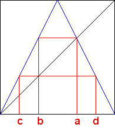

| 4. (a) For the s = 2 tent map the fixed point equation |
| 2 - 2x* = x* |
| Solving gives x* = 2/3. |
| (b) Here are the graphical iteration plots locating the four points. |
|  |
| (c) First, observe a is the nonzero fixed point x*, so a = 2/3. |
| Next, 2/3 = T(b) = 2b, so b = 2/6 = 1/3. |
| Then, 2/3 = T2(c) = 2(2c) = 4c, so c = 2/12 = 1/6. |
| Finally, |
Return to Homework 8 Practice.